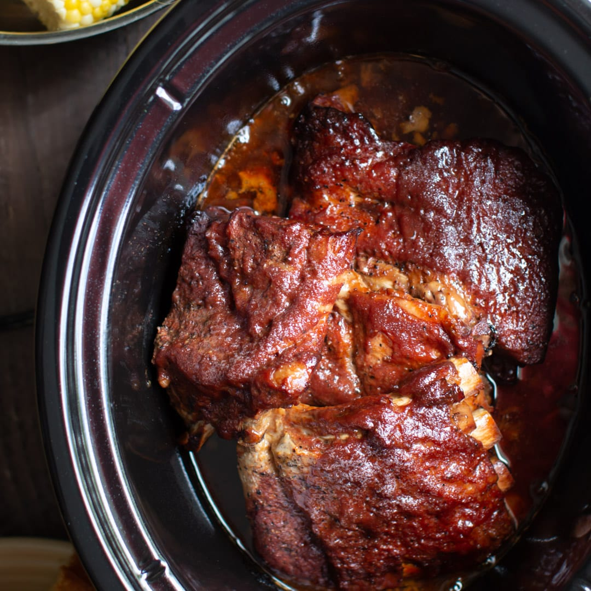

Baby Back Ribs

Description
These are the best I've had, short of the actual grilling method of
course! This is a very simple recipe that I came up with a few years ago. It's not rocket science, just ribs cooked in the slow cooker and finished in the oven. This is what I do when I want ribs during the week and have to work all day. I'm eating them within a half-hour of getting home, and they turn out perfect every time!
- 3 pounds baby back ribs, trimmed
- salt and ground black pepper, to taste
- 1/2 cup water
- 1/2 onion, sliced
- 1 clove garlic, minced
- 1 (18 ounce) bottle barbeque sauce
Steps
- Season ribs with salt and pepper.
- Pour water into slow cooker. Layer the ribs into the slow cooker. Top the ribs with onion and garlic.
- Cook on High for 4 hours (or Low for 8 hours).
- Preheat oven to 375 degrees F (190 degrees C).
- Transfer ribs to a baking sheet. Discard onion and garlic. Coat ribs with barbeque sauce.
- Bake in preheated oven until the sauce caramelizes and sticks to the meat, 10 to 15 minutes.